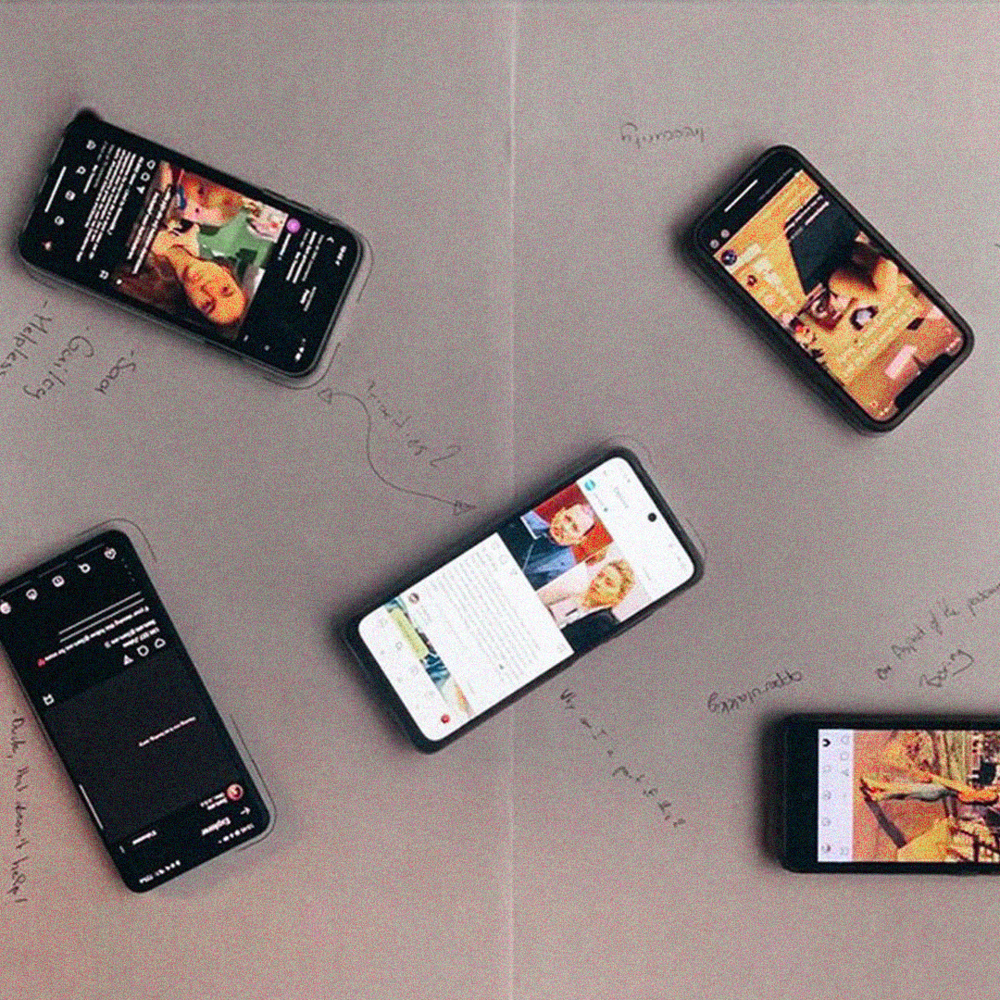
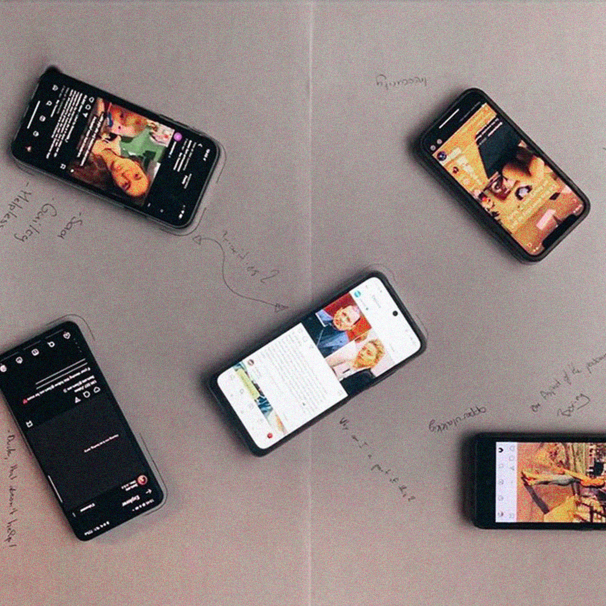

about
Emma Verhoeven is a Rotterdam-based media artist whose practice explores themes around self-improvement and mental health. Through audiovisual installations and playful workshops, she investigates the evolving definitions of success and meaning within our commerce-driven media landscape.
contact
email Emma at emmavrhvn [at] gmail.com or find us on instagram
Installation
United Mental States
United Mental States is a collection of mental-health-inspired islands envisioned by youth from
Brabant, that were created during multiple workshops I developed with Mu Hybrid Art House over the
last year, then translated into a spatial work for their 25-year-anniversary-exhibition Hybrid Tales
For Hybrid Times. The various continents in this ‘3D collage’ represent common States of young minds
as associative visual landscapes; a 30 min video projection shows personal interviews about the
current state of their mental health, with their self-imagined ‘mental landscapes’ as backdrops.
I absolutely loved working with young people, working on serious topics, working in Brabant, working
with
neurodiverse kids, working with MU, working with my hands, working with friends. I would like to do
more of it and get better at it.

 



Escape Here Now
If you’ve ever experienced an escape room, you will know the thrill of looking around for clues, finding patterns in everything, and feeling like the hero in a real adventure story. For under €30 you can have a fun hour trying to crack codes and find the key to your fake escape. But escape rooms are just superficial entertaining experiences you can buy, and I want to spend my time productively and meaningfully. I want to play the lead role in my own adventure. I want real experiences!
I want to travel the world to discover myself, go on a retreat to find myself. Lift up my soul on the yoga mat, but also keep both feet on the ground; need to stay down to earth. Straightforward. Got to move forward. Set goals, reach my full potential. Push myself, be more productive. Dream big, trust the universe. Let go of fears and stress. Do what I want! Enjoy life, live it to the fullest. Have fun, be free, escape!
This escape room will make you more productive, centered, grounded, motivated, charismatic, kind, beautiful, creative, healthy, ambitious, fit, profitable, driven, relaxed, calm, happy, passionate, reflective, aware, brave, humble, confident, intelligent, skilled, accepting, balanced… play a thrilling game of self-discovery and escape from the maze of self-improvement!Experimental Rehab for Online Buyers (E-ROB)
What if we need E-retail therapy? Every year, thousands of people become victims to online shopping fraud, despite warning campaigns. Why is it that even when we aware of the danger, we can still be deceived? Could there be a deeper drive, overruling our rational judgement, that we need to come to terms with? To investigate this, Extra Practice and the municipality of Haarlem set up E-ROB, the Experimental Rehab for Online Buyers. At DDW we tested, diagnosed and treated visitors to both rE-search and rE-boot their online shopping behaviour.
A collaboration between myself, Benjamin Earl and Gijs de Boer, partnered with Municipality of Haarlem and LMIO, as part of the What If Lab and the Embassy of Safety during Dutch Design Week 2019.
Guardians of the Amazon
For this collaboration with Greenpeace NL, I gathered a large collection of images that represent the Indigenous people of the Amazon, found in historical archives, Greenpeace media sources, Western and Brazilian media. In a series of vibrant posters and a video collage I explore my fascination with the different conflicting roles or identities which Indigenous people could be associated with, depending on who is creating images of them.
VRcation
What do we really seek when we travel? Holiday deals are sold to us like mass products which make vacationing seem no more than the consumption of fabricated tourist experiences. So how is passively travelling within the comfortable tourism bubble, far removed from local realities and authenticity, different from seeing a destination through VR-goggles? VRcation was a speculative travel agency selling virtual vacations. Order this new-style package deal online: mix various sights, environments and tours to your own desire, complete with home-delivered accessories. Put your goggles on, stick your feet in the sand and enjoy your personal package deal without even packing.
VRcation was inspired by, and then presented at Vakantiebeurs Utrecht.
Workshop/Event
ThemeWork
ThemeWork is an ongoing series of events hosted at Extra
Practice,
where we collectively work
on important and serious unpaid tasks (like filing taxes), but with a unique theme. The
theme changes every session, and is reflected in the space’s decor, the snacks, the online
communication, and sometimes in the dress code. Instead of isolating ourselves with our
laptops, we enhance the value of our unpaid work by making it a fun and collective
experience. At the same time, we are conducting important research: do we work better if we
imagine ourselves in a wellness resort? Or a daycare center? Dressed like cowboys?
If you want to attend the next ThemeWork session, keep an eye on the @extrapractice
instagram page.
United Mental States
In these workshops, that I am currently still giving at different students and schools in Brabant, students explore their inner worlds through collective reflection and visualization, identifying common emotional themes which they translate into a collective visual "mental landcape." Beginning with a meditative session and prompts on feelings and thoughts, students categorize their responses into themes like joy, fear, hope, and uncertainty. Together, they create a map illustrating these mental states and their connections, fostering a feeling of connection and providing a way to talk about abstract feelings with a playful distance.
Workshops vary from 1 hour to 10 weeks, 5 students to 120 at a time, and outcomes go from outlines of islands to collages to tours through the islands or audio-tours.
Translocal Lives
The 6-week course I co-developed as part of Translocal Lives, a research project by Amanda Paz Alencar. I got to teach 14 newcomers in Rotterdam to translate their ideas on place-making and belonding into short films, using their smartphones and open-source software. We screened the final films in KINO Rotterdam.
Once Upon a Time in Desktoppywood
An Introduction into Non-Professional Modes of Digital Storytelling. Workshop created for the MA Critical Inquiry Lab at the Design Academy Eindhoven in collaboration with Benjamin Earl. The workshop program and resources can be found here.
Video
United Mental States
During 1,5 year of workshops at different highschools in Brabant, I interviewed some of the participating students in front of a green screen. I asked them to pretend to be inside the landscape they had designed based on emotions and thoughts during the workshop, and asked them questions about the feelings that were represented in that landscape. The backdrops are based on their own creations made in the workshop, translated into animatd backgrounds. The interviews together became this film which was screened alongside the physical islands installation in MU.
Translocal Lives
Short description of the project
Vliegangst Met Hedwig
Short description of the project
Escape Here Now
Short description of the project
Identity-Body-Machine-Earth-System
Short description of the project
Guardians
Short description of the project
Alternative Trusting Methods
Short description of the project
NERO
Short description of the project
United Pianos of YouTube
Short description of the project
Web
Escape Here Now - THE GAME
Short description of the project
Self Screensaver
Short description of the project
Choice Connector Week
Short description of the project
Text
I Want To Be A Regenerative Farm
XP Newsletters
Escape Here Now & unlock the secret door to authenticity
Alternative Trusting Methods